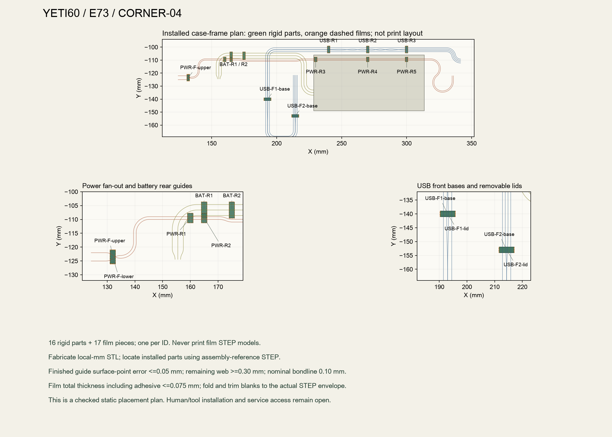

English | Chinese
E73 cable retainers: parts, printing and dry fitting
This set follows E73 CORNER-04, its rotated mainboard J5 and the current nine-conductor route. The existing C5 daughterboard, PCB and 60-key layout are unchanged. Use the current wire connections and conductor lengths.
Engineering parts for review and measured dry fitting. Rigid-body, film, wire-capture and tolerance checks do not qualify resin strength, tape adhesion, human access or the complete installation/withdrawal sequence. Complete closed-case assembly release remains open. Do not permanently bond the review set before the process and service gates are resolved.

What to make
| Item |
Net quantity |
Files / process |
| Rigid guides and removable covers |
16 |
Local print STL set: one copy of each part. Alternatively print each named STL once; do not order both options |
| Guide assembly references |
16 |
Assembly-reference directory; STEP files retain their installed case coordinates |
| Cut/fold film pieces |
17 |
Film blank template; cut from the specified film, do not 3D-print the film STEP models |
| Full part/count table |
33 pieces total |
Retainer CSV |
| Geometric requirements |
1 specification |
Retainer specification |
Rigid parts: three USB-R roof guides; two USB-F floor bases and their two removable lids; two BAT-R floor guides; five PWR-R PCB guides; PWR-F-upper and PWR-F-lower. Seven rigid guides attach to the case, six to the PCB, and three are removable covers/halves.
Film pieces: three USB rear straps, four USB front side patches, two battery straps, five power rear straps, two power fan-out side patches and one lower power fan-out strap. Folded straps have two bonding legs; side patches bridge both mating pieces. A floating rectangle below a wire is not a complete retainer.
Manufacturing requirements
- Millimetres, 100% scale. Local STL files are translated to the origin and, where needed, rigidly turned so the channel is accessible for printing. Their shape and volume are checked against the assembly STEP. No scale or shrink compensation is baked into them.
ALL-16-GUIDES-ONE-EACH is a spaced layout containing exactly one of every rigid part. It is a convenience layout, not a seventeenth component. Send individual files if the supplier needs to choose support/orientation separately.- Use an insulating tough engineering resin or an insulating machined polymer that can meet the finished dimensions. The files do not establish that every low-cost SLA service can meet them. Agree on the small-part process, support removal and post-cure before fabrication.
- Maximum finished surface-point error: 0.05 mm in 3D. Minimum measured remaining web: 0.30 mm after support removal and bonding-face finishing. Inspect the rear stepped roofs, groove edges, front lid roofs and battery guide walls. Do not enlarge wire channels or sand a thin web below the limit.
- Single-wire groove radius: 0.50 mm; central USB pair channel radius: 1.01 mm. The shrink allowance in the checker accounts for the stated part-profile error; it is not an instruction to change these CAD dimensions.
- Fit bonding lands to the actual post-cured case and inspect the nominal 0.10 mm bondline and remaining webs. Two independently printed, unfinished surfaces are not assumed to fit that gap automatically. Do not force a guide against a wall or compress the battery to make it fit.
- Print orientation is not installation orientation. Restore the part to its assembly STEP pose using the indexed drawing/datums. Do not mirror parts or transfer the slicer's arrangement coordinates into the keyboard.
Film material and cutting
Candidate: 3M 5413 polyimide film tape. Its manufacturer lists 0.069 mm typical total thickness. The project requires ≤0.075 mm including adhesive on the actual received lot; the typical value is not a guaranteed maximum or an adhesive qualification on the selected resin. 3M technical data
Use one small roll and cut the 17 indexed pieces; the net count is not 17 rolls. The SVG is in millimetres and includes a 50 mm scale bar. Print it without page fitting and verify that bar before using it as a paper reference. The CSV gives nominal blank dimensions. Folded blanks include 0.5 mm trim stock at each end; fold on the actual guide and trim to the assembly STEP envelope. They are not claimed exact neutral-axis bend developments. Do not leave extra film projecting into the PCB, case wall or another wire.
The CAD film geometry includes side legs and both front/fan-out seam patches. Keep contact lands clean and follow the adhesive supplier's instructions. The model's bonded area is a geometric contact check; peel strength, creep and wire retention still require a coupon/sample test. Treat removed film as replaceable consumable, not a repeatedly reusable fastener.
Dry-fit order and location checks
- Complete the bare-PCB soldering and bench tests. Keep guides/adhesive away from reflow heat, exposed lands, sensing surfaces and the J3 programming contacts.
- Inventory all 16 rigid parts and 17 film pieces. Use the local STL files for fabrication and the case-coordinate STEP files for placement. Measure the groove, roof and web dimensions before touching a PCB.
- With the case and electronics separate, dry-fit the three USB rear guides, two USB front bases and two battery guides to the M04 case. Match their mounting faces and the inspected bondline. Use temporary positioning for this review stage; the final insertion/service sequence has not been released.
- Dry-fit five
PWR-R guides and PWR-F-upper on the PCB underside, avoiding components, vias/pads that must remain accessible and mounting hardware. The printed pose is often upside-down relative to this installed pose. Check against the actual board thickness and assembly reference.
- Seat the four USB conductors in their assigned outer/pair channels, the three pack conductors in their numbered battery channels, and the two bridge wires in their own power channels. Do not cross J5.1/J5.2; J1.2/J1.3 remain empty. Ensure each guide actually contains its intended wire rather than leaving the wire underneath or beside it.
- Trial the two USB front lids and lower power fan-out half. The USB side patches retain each base/lid pair; the power side patches retain its upper/lower pair. Check both mating pieces and the bottom strap before replacing any temporary positioning with adhesive.
- Check the entire harness against the case/PCB, fasteners, full protected-pack envelope and the stated route. The CAD limits include small residual gaps, so visual plausibility alone is insufficient. Any glue squeeze-out or untrimmed film is additional material that must fit inside the accepted envelope.
- Hold final bonding and closure until the complete installation/withdrawal and tool-access procedure is qualified. Opening the top case or turning SW100 off is not full battery isolation; unplug USB and isolate the pack before electrical rework. Use the current electrical guide for the actual power checks.
Evidence and limits
Retainer study covers the nominal board plus 1.44/1.76 mm thickness endpoints, complete films, guide/film/PCB/case/pack/component/fastener collisions and foreign wires. Per-pin channel tests require a nonempty wire segment inside the correct shrink-bounded channel. A misplaced empty guide and a floating flat film must fail, alongside a thick-film and PCB-intersection witness.
Print-export study checks rigid transforms, millimetre mesh bounds and volume. These reports are source-bound design evidence, not physical solder, adhesive, resin, USB/BLE, EC, charging or battery thermal acceptance.